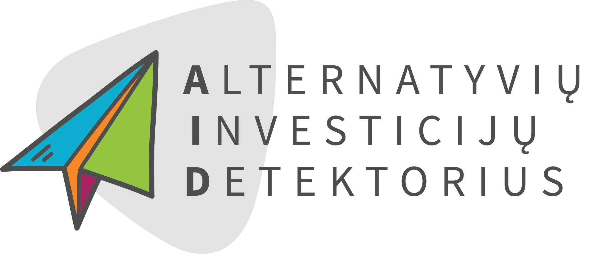
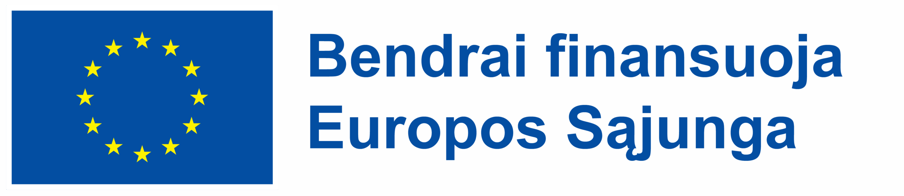

2026 m. birželio 15 d. kartu su Europos socialinio fondo agentūra pradėjome įgyvendinti projektą „Alternatyvių investicijų detektorius“ (AID2) (Nr. 07-023-P-0002). Projekto veiklas vykdome „Restarto“ vardu.
- Projekto pavadinimas
- „Alternatyvių investicijų detektorius“ (AID2)
- Veiklos pavadinimas
- „Restartas“
- Projekto numeris
- Įgyvendinimo pradžia
- Įgyvendinama kartu su
- Europos socialinio fondo agentūra
- Finansavimo šaltinis
- Europos Sąjungos fondų ir bendrojo finansavimo lėšos
- Būsena
- Vykdomas
Projekto tikslas
Stiprinti socialinę integraciją ir didinti socialinę riziką bei socialinę atskirtį patiriančių žmonių galimybes sėkmingai įsilieti į darbo rinką.
Projekto veiklos
Projektas skirtas plėtoti socialinės integracijos paslaugas ir padėti žmonėms aktyviau dalyvauti bendruomenės gyvenime.
Kam skirta
Nedirbantiems asmenims, turintiems įsiskolinimų, perduotų antstoliams priverstiniam išieškojimui. Jeigu susiduriate su sunkumais dėl įsiskolinimų, kviečiame susisiekti — kartu ieškosime geriausių sprendimų.


Projektas bendrai finansuojamas Europos Sąjungos fondų ir bendrojo finansavimo lėšomis.